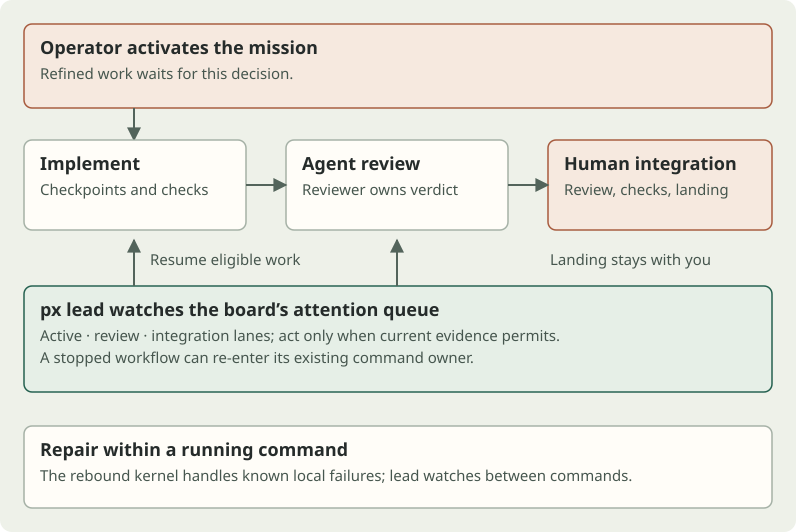
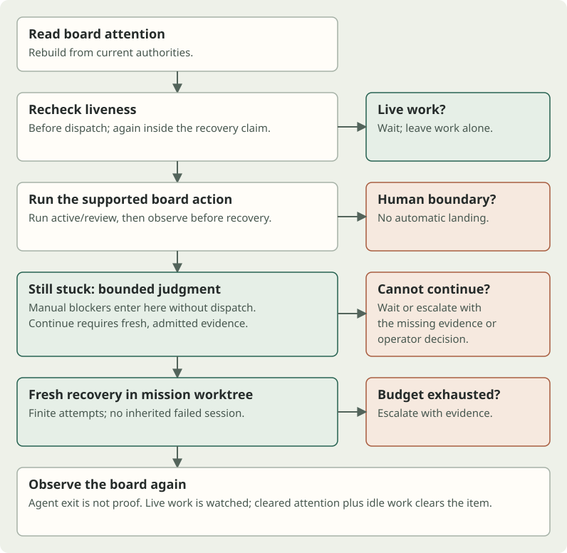

Who restarts the coding agents?
Running several coding agents creates another job: noticing which workflow stopped, finding out why, and getting it moving again. Parallix’s px lead watches that queue and handles supported continuations, with bounded recovery when the normal command is not enough.
A coding agent can stop without finishing its job. A process exits, a workflow command fails, or an approved review remains parked before its next transition. The operator returns to a board of missions and has to reconstruct what happened: is someone still working, which command owns the next step, and is it safe to run it?
With parallel missions, this becomes repeated supervision work. Each interruption asks for a small investigation and often a routine restart. The useful automation is to keep eligible work moving while bringing back a specific question when progress depends on a person.
In Parallix, lead takes its work from the same “needs your attention” queue the operator sees. It supervises active, review, and integration missions. Refined missions still wait for operator activation. Lead uses the existing workflow commands and their admission rules; it does not maintain a separate lifecycle or decide that every quiet mission is stuck. [1]

Read the queue, act, then look again
The board supplies both the reason for attention and a typed action. For eligible active work, lead forwards to px active; for review work, to px review. Long active and review workflows run without holding up supervision of the other missions. If the board asks for integration, lead leaves that item for the operator. [2]
Before dispatching, lead reads the mission’s current execution activity again. This matters even when the mission appears on the attention queue: a failed gate or blocking reason can outrank live work in the board’s presentation. A worker may already be repairing the problem. Starting another command onto it would create a collision.
Lead remembers the board action it has pressed against those facts during the run. If the same item persists, it does not press that action forever. Transient command errors have bounded retries; a still-stopped workflow can then reach fresh recovery. A manual blocker has no lifecycle command to dispatch and goes directly to the recovery decision.
Recovery first claims the mission against competing supervisor runs and rechecks liveness. It then asks the configured decision provider for a bounded judgment: continue, wait, request evidence, or escalate. A continuation must refer to current mission, operation, progress, and evidence identities. The application checks the proposal against refreshed authority; it checks again at the prepared recovery launch boundary. A plausible model answer is insufficient when the underlying facts have changed. [3]
An admitted continuation starts a fresh agent context in the mission’s existing worktree. The agent receives the board diagnostic, any action already attempted, and the recovery constraints. The diagnostic is evidence to investigate, rather than an asserted root cause. The launcher avoids resuming the failed conversation and preserves the implementer’s session identity. [4]

The next observation decides what happened. A recovery agent saying “done,” or exiting successfully, does not clear the item. Lead reads the board again; if the item disappears while credible work is running, it keeps watching. It records clearance only when the item is off the queue and the work observation is idle. Clearance means that attention condition has cleared, not that the mission is complete or approved.
This is different from command-local repair. The rebound kernel handles a known failure inside the command that encountered it—for example, a failed validation step with diagnostics available to that operation. Lead handles a workflow that still asks for attention between commands, when no running owner remains to repair it. A lead-started command can itself use its normal repair path. These layers answer different questions and share the existing workflow authorities. [5]
Three situations that look similar from a distance
The following are illustrative traces of supported behavior, not reports of production recoveries or fresh experiments. The linked assertions exercise the decisions described; they do not establish a recovery rate.
A stopped active workflow can resume
Suppose an active mission has no credible worker and the board offers its active command. Lead rechecks liveness and starts that command in the target worktree. If normal execution resumes, lead watches it while continuing around the fleet.
If the same attention condition remains after the command has stopped, lead may claim recovery. With current evidence and an admitted continue decision, a fresh agent investigates the retained diagnostic and repository state, then runs the supported continuation. On a later pass the board no longer asks for attention and the worker is idle: lead can report the item cleared. If the item survives its recovery budget, the result is escalation with the observed steps. [1]
A failed gate with a live worker must wait
Now suppose the board still shows a failed gate, but the implementer is already running a repair or recheck. Lead’s liveness read sees credible work and dispatches neither the board command nor a recovery agent. The same rule applies if work starts after the queue was read, or while judgment is in flight. An unreadable activity authority is not permission to assume idleness. The operator saves a needless restart, and the existing worker retains ownership. [1]
An approved review still needs a human
A reviewer has approved a round, but its move out of the review lane was interrupted. Lead can finish that already-authorized transition. If the round is undecided, it forwards to the review workflow so the configured reviewer decides. It cannot manufacture approval or review its own repair.
Once the board offers integration, the operator takes over: inspect the change and review evidence, make the landing decision, and invoke the integration workflow with its checks. If there is instead a recorded contract or operator decision blocker, recovery may investigate eligible active or review work but cannot acknowledge or clear that reserved decision. Integration-lane judgment cannot admit fresh continuation. An unresolved decision must return with evidence, options, and a recommended next step. [2] [3]
Start by observing
From a configured Parallix repository, inspect the public command help and preview the queue:
px --help
px lead --dry-runThe dry run prints eligible attention items and their offered actions without dispatching commands, consulting judgment, or launching recovery. An empty queue is a valid result. This is the first check to make before allowing lead to act.
Then choose the operating window. These are separate alternatives; substitute an existing mission slug where shown:
# One pass over the fleet’s eligible queue
px lead --once
# One pass restricted to an existing mission
px lead <slug> --once
# Continuous supervision with explicit polling and recovery budget
px lead --poll 60 --budget 2--once takes one queue pass; it is not a guarantee to drive a mission through recovery and completion. An item may remain open. Lead waits for steps it started and forwarded commands to settle, but a single pass does not provide the later board observation needed to confirm clearance. Without it, lead keeps watching until stopped, including when the queue has no actionable work. Polling controls when an otherwise waiting loop looks again; work finishing can wake it sooner. [6]
The last command explicitly chooses the current default polling interval and fresh-recovery attempt budget. The attempt budget is per failure during that supervisor run, rather than a lifetime quota per mission. A genuinely different failure has its own attempts; minor changes to digits or whitespace in a diagnostic do not automatically create a new failure. Restarting lead starts new run bookkeeping. --budget 0 disables fresh recovery attempts but still permits eligible board-command dispatch—it is not a dry run. [6]
When lead escalates, use the reported steps and the durable mission evidence to inspect what remains:
px status <slug>
px history <slug> listResolve any reserved operator decision through its supported workflow before retrying. Interrupting lead stops supervision; inspect the target mission for outstanding owned work and use px stop <slug> when that work also needs stopping. Stopping the watcher is not a substitute for checking the worker. [6]
Trading model work for fewer attention switches
The intended saving is concrete: the operator need not repeatedly open each stopped mission, identify its supported next command, and restart a safe continuation. Lead can carry out that routine supervision and return the cases that need authority or more evidence. That can reduce the delay until eligible work resumes, especially while several missions progress in parallel.
It adds work too. Judgment uses the configured model provider; fresh recovery spends agent tokens and time rebuilding context from the repository and mission evidence. Forwarded workflows retain their own checks and review costs. Polling introduces observation delay. Provider latency and failed attempts can make recovery slower or more expensive than an operator’s quick diagnosis.
The budgets limit repeated spending, rather than predicting success. Judgment has finite invocation and elapsed-time bounds, rejects stale or invented evidence references, and does not repeatedly consult the model on unchanged evidence. Missing authorities, unavailable judgment, malformed proposals, or insufficient evidence can force escalation before any recovery runs. A request for evidence is surfaced for attention rather than granting permission to proceed. [3]
These protections depend on the evidence available. A stale activity record can misrepresent work; a board reason can describe a symptom rather than its cause. Rechecks and recovery claims reduce collisions, but they cannot make every diagnosis correct. The recovery agent must preserve mission scope, gates, tests, review authority, and operator decisions. A defect outside the mission’s scope belongs back with the operator, rather than being silently absorbed into the repair. [4]
No attention-saving percentage or end-to-end productivity gain is established here. The existing assertions support the control flow and boundaries; the scenarios explain how those contracts can help. The context article’s paired experiments concern context choices at specific workflow stages, and the Jev article concerns review work. Neither measures the benefit of fleet supervision. Measuring lead would require recording operator interventions, unresolved cases, added usage, and time to useful progress across comparable workloads.
The engineering choice is to automate repeated, evidence-backed continuation while keeping uncertainty visible. A useful supervisor moves work when it has authority, leaves a live worker alone, and returns a precise decision when only a person can make it.